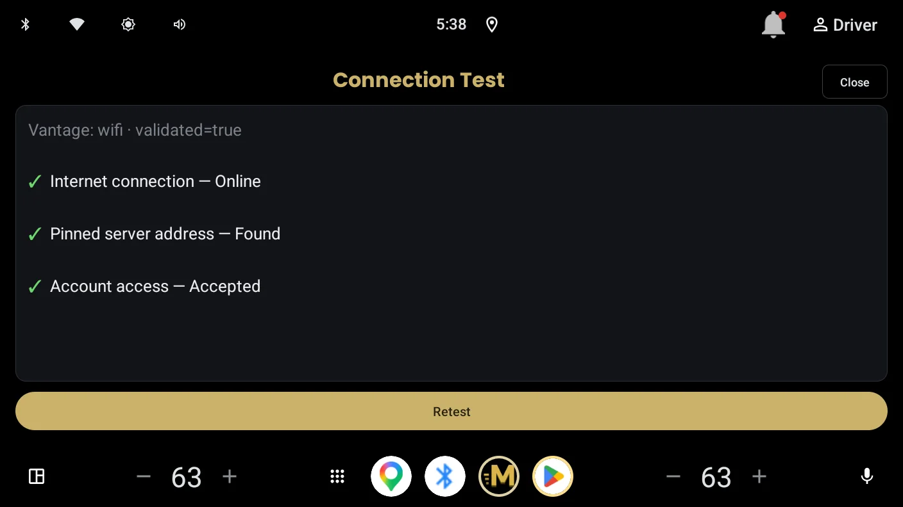

Help & FAQ
Most problems come down to one question: can the car reach your server right now? Start with the Connection Test in the app's settings. It runs the same checks Momentum uses internally and tells you in plain language which step failed.

The app says my server is unreachable
Momentum reaches your server the same way the official Plex app on your phone does over cellular. Run the two-minute test on the Before You Install page: official Plex app, WiFi off, VPN off, play a track. If that fails, the problem is server reachability, not the car. Check Plex's Remote Access page on your server; it should read "Fully accessible outside your network".
If the phone test works but the car still cannot connect, run the in-app Connection Test and note which of its checks fails. That result is the fastest thing to include if you contact support.
What do the Connection Test's checks actually mean?
Internet — whether the car has a working connection at all. This is tested against Plex's own servers. A failure here means the car is offline; nothing is wrong with your server.
Server address lookup — whether your server's address can be translated into a network address. A failure is a DNS problem, usually in the car's network or a router setting, and not something Plex controls.
Plex server — whether your server answered. This is the one that matters most. If it fails, the checks below it could not run.
Account access — whether your server accepted your Plex account. "Not checked — server didn't answer" means the server never replied, so nothing about your account was tested. A real failure here reads "Rejected (not authorized)" and means either remote streaming needs a Plex Pass, or a shared server needs access granted by its owner.
Available paths — every address Plex publishes for each of your servers, and which of them answered. "0 of 4 addresses answering" means none of the routes to that server worked from the car. If a second server shows addresses answering, you can switch to it in Settings.
Plex publishes a direct address for my server, but it didn't answer
This means Plex knows a public address for your server and is telling clients to use it, but nothing responded there. The server is running and talking to Plex; the route in from outside is broken.
The usual cause is a port forward that stopped working. Routers can drop forwards when they restart (depends on how it was configured), and a forward also breaks silently when the server's local address changes, which happens on its own if the server gets its address automatically. The durable fix is to give the server a fixed local address in your router's settings, then re-create the forward to that address.
Also worth checking: that the server is awake and not asleep, and that Plex's Remote Access page still reads "Fully accessible outside your network". If you have recently changed router or internet provider, the address Plex is publishing may simply be out of date. Plex will catch up on its own, though it can take a while.
Plex is only advertising a local address for my server
A local address only works inside your house, and your car connects from outside it. Plex has no public route to hand out, so there is nothing for the car to reach.
Open Plex's Settings, then Remote Access. It should read "Fully accessible outside your network". If Remote Access is switched off, turn it on, tick "Manually specify public port", and forward that port on your router to the machine running Plex. A fixed local address for the server makes that forward survive; if the server's address changes on its own, the forward stops pointing anywhere.
If you have just enabled it, give it a few minutes. Plex can be slow to publish a new address, and the car will find it once it appears.
If Remote Access is on and still cannot get a public route, your internet provider may not be giving you one. That is a different situation, covered below.
My provider gives my server an address shared with other customers
Shared addresses, sometimes called carrier-grade NAT, cannot accept incoming connections. No port forward will help, because there is no port to forward to. This is not something you have set up wrong; plenty of providers do it by default.
There are two ways out. The first is to ask your provider whether they can give the server its own public address. Some will, sometimes free and sometimes for a small charge, and some will not offer it at all. This varies by country and provider more than by anything you can control.
The second is a tunnel, which gives your server a public address without needing one from your provider. Tailscale Funnel is the simplest of these and is known to work with Momentum. Note that this is different from plain Tailscale or WireGuard, which the car cannot join.
If neither is possible, Plex Relay will still work. It is slower and caps quality, but it plays.
Why did my music quality drop, or a track play as MP3?
If the file is FLAC and it still played as MP3, the connection could not carry it at full bitrate, so Momentum switched to a converted stream rather than stopping playback. This is most common on Plex Relay connections, which are bandwidth-limited by Plex, and on weak cellular stretches. Your files on the server are never touched; the conversion happens in transit, and direct play resumes when conditions allow.
If this happens constantly, check whether your server is connecting via Relay instead of a direct port-forwarded connection. The Connection Test in the app's settings will tell you which.
Does Momentum work with Android Auto?
No, and there is no Android Auto version planned. Momentum is built natively for Android Automotive OS, the operating system inside cars with Google built-in. If your car uses Android Auto (phone projection), the official Plexamp app covers that platform well.
Can I use Tailscale, WireGuard, or another VPN to reach my server?
Not directly, with one real exception. The car runs a locked system that cannot join a VPN or overlay network, so a server reachable only at a private overlay address (a Tailscale 100.x address, a WireGuard peer, ZeroTier) will not work from the vehicle, even though it works from your phone with the VPN app installed.
The exception is tunnels that publish a public endpoint, such as Tailscale Funnel or Cloudflare Tunnel. Those give your server a publicly reachable address, which the car can use like any other public path, and some Momentum users run this way. Two caveats if you do: the tunnel's public URL needs to be added to your Plex server's "Custom server access URLs" (Settings → Network) so apps can discover it, and the tunnel becomes part of your streaming path, so its bandwidth limits or outages will look like an unreachable server from the car.
A port-forwarded direct connection is still the fastest and most reliable option.
Why does playback pause or skip in weak coverage?
Momentum buffers ahead aggressively, so short gaps in cellular coverage usually pass unheard. In a longer outage the app holds your place, tells you on screen that the connection was lost, and resumes when the network returns. If you regularly drive through dead zones and hear interruptions, lower-bitrate files will ride through longer gaps than high-resolution ones, simply because the same buffer holds more seconds of audio.
What data does Momentum collect?
Momentum includes crash reporting and diagnostic logging so problems can actually be fixed on a platform with no debugging access. Diagnostics never include your Plex password, and your Plex token is removed from logs before they leave the device. Uploaded logs are deleted after 14 days. The full details are in the privacy policy.
I found a bug, or something looks wrong
Use Send Diagnostics in the app's settings right after you see the problem, then email a short description of what happened. The diagnostic log is what makes car-side problems fixable, and sending it close to the incident matters because it captures a rolling window.
Support: support@momentumcar.app